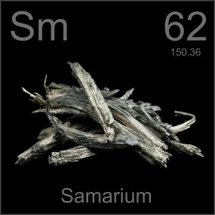

HOME
PREVIOUS
NEXT

Samarium
Atomic Weight: 150.36
Density: 7.353 g/cm3
Melting Point: 1072 °C
Boiling Point: 1803 °C
Samarium-cobalt magnets made possible the first lightweight head-phones, but have been replaced by neodymium-iron-boron magnets, which are even stronger. The metal in pure form has few applications.